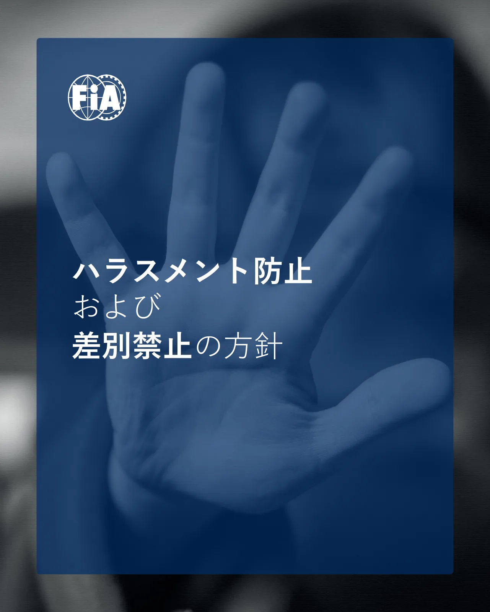
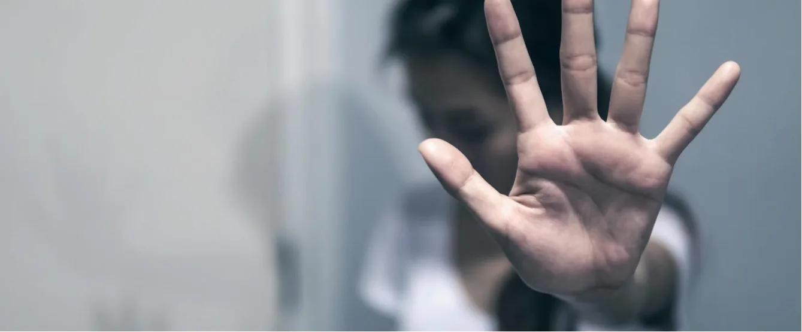
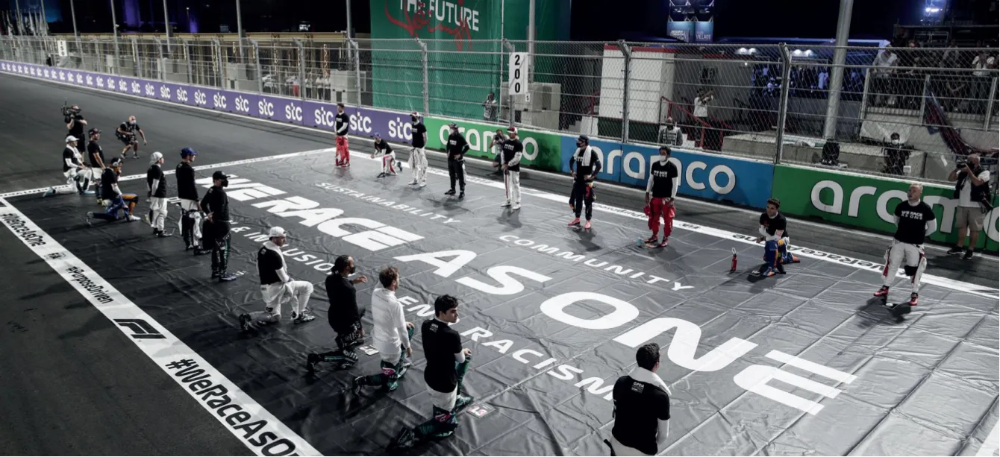
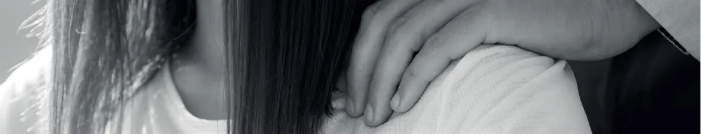

ハラスメント防止および差別禁止の方針_日本語版_20230101
この文書には自動変換で完全に読み取れなかった箇所があります。正式な判断は必ず JAF の原本 PDF をご確認ください。


ハラスメント防止および差別禁止の方針
FIA 倫理規定の第1 条に従い、当連盟は、すべての個人が敬意と尊厳を持って扱われる環境で、運営することを約束します。私たちは、FIA 関係者 (代表者、団体のメンバー、スポーツ関係者、スタッフ、コンサルタント) または FIA の第三者 (サプライヤー、プロモーター、パートナー) によって行われる可能性のあるハラスメントや差別的な行為は、活動環境の安全性、FIA ファミリーの誠実性、組織の信用にとって、有害な不正行為の一種であることを明確に認識します。各個人はその役割にかかわらず、平等な機会を促進し、ハラスメントや差別的慣行を禁止および防止する、制度的かつプロフェッショナルな環境で活動する権利を有します。したがって、FIA は、当連盟のために積極的に活動する人々の間のすべての関係が、公正かつプロフェッショナルであり、明白な偏見、思い込み、ハラスメント、差別、報復がないことを要望します。FIA は、関係者全員がこれらの方針に精通し、方針に違反する苦情は、調査され適切に解決される、ということを認識できるよう、あらゆる合理的な努力を行います。これらの方針について質問や懸念がある場合は、FIA Compliance Officer または FIA Human Resources Director まで連絡することをお勧めします。この方針は、すべてのFIA の当事者、FIA の第三者、および不正行為の懸念を報告するすべての人に適用されます。
禁止行為
FIA では、人間の尊厳と、私たちの活動への参加者の身体的および精神的健康に有害なすべての行為は容認されないものとします。これらの行為には、差別、ハラスメント、セクシャルハラスメントが含まれます。【差別】差別とは、各人の人種、性別、宗教、国籍、民族的出身、性的指向、障がい、年齢、言語、社会的出身、またはその他の地位、保護特性に基づく不当な扱い、恣意的な区別を意味します。差別は、同様の状況にある1 人または集団に影響を与える単発的なケースもあれば、ハラスメントや権力濫用によって顕在化するケースもあります。差別的慣行の例：
P.3• 性別、民族、年齢、宗教の理由により、職員の給与を減額する
• モータースポーツイベントにおいて、健康および/または安全上の懸念など、正当で文書化された客観的な理由なしに、障がいを持つドライバーの参加を除外または制限する• FIA メンバーが、FIA のイベントへの女性の参加を制限する

【ハラスメント】
ハラスメントには、他者に不快感や屈辱を与えると合理的に予想される、またはそう受け取られる可能性がある、不適切で望まれない行為が含まれます。ハラスメントは、他者を悩ませ、驚かせ、罵倒し、侮辱し、威嚇し、軽蔑し、恥をかかせ、当惑させ、または脅迫的、敵対的、攻撃的な活動環境を作り出すような言葉、身振り、行動で行われることがあります。ハラスメントの例：身体的ハラスメント• 人を押す、突き飛ばす、故意にぶつかる• 身体的な威嚇行為をする感情的ハラスメント• 個人に対して、品位を傷つける、または恥ずかしい冗談を言う• 個人を対象とした、低俗、またはみだらな発言をする
P.4• 望まれない、不快な、または敵対的な表情や身振りをする
• 個人に関して、中傷的な文章や画像を作成する
• ネットを利用した、いじめ行為をする
• 噂の拡散を行う
ジェンダー/人種ハラスメントおよび性的指向に基づくハラスメント
• 個人の性別/人種/性的指向を否定的、下品、または軽蔑的な言葉で言及する
• 性別/人種/性的指向に基づく個人の除外行為をする

【セクシャルハラスメント】
セクシャルハラスメントとは、望まれない性的誘い、性的好意の要求、性的発言、身体的行為や身振り、または他者に不快感や屈辱を与えると合理的に予想または認識される可能性のある、その他の性的行為を指します。そうした行為は、仕事を妨げたり、雇用に関与したり、威圧的、敵対的、攻撃的な活動環境を作り出します。通常は行動パターンを伴いますが、一度限りのケースもあります。 セクシャルハラスメントは、異性間と同性間のどちらにおいても発生する可能性があり、性別に関係なく、被害者にも加害者にもなり得ます。セクシャルハラスメントの例： • 個人の性的指向または性同一性について、軽蔑的または侮辱的な発言をする• 性別/性的な意味合いを持つ、罵倒や中傷をする• 外見、服装、体の部位に関する性的な発言をする• 個人のセクシャリティを評価する• 繰り返しデートや性行為を求める• 性的暗示を与えるように凝視する• つねる、軽くたたく、撫でる、意図的に接近するなど、好ましくない接触をする• 腰を突き出すなど、不適切な性的ジェスチャーをする• 性的または低俗な話やジョークを言う• 形式を問わず、性的内容を暗示する言葉を発信する• 形式を問わず、不適切な性的画像や動画を共有または表示する• 強姦を含む性的暴行または未遂を犯す
《期待される行為》
FIA の活動に参加するすべての人は、多様な見解や意見を尊重するという精神に基づいて、敬意、尊厳、配慮を持って公正に扱われることが期待できます。相違点についての議論や意見の批評は、他者の視点を十分に配慮して、非対立的な方法で行う必要があります。《雇用機会均等》人種、肌の色、宗教、性別、性的指向、性同一性または性表現、年齢、障がい、婚姻歴、市民権、国籍、遺伝情報、その他法律で保護されている特性に基づく差別や、ハラスメントのない平等な雇用機会を確保することがFIA の方針です。《インシデントの報告と調査》FIA は、差別やハラスメントと思われるすべての事例について、FIA 倫理・コンプライアンス・ホットライン／FIA 倫理原則の違反を通じて報告することを推奨しています。FIA Ethics Committee と FIA Compliance Officer (fia-ethicsline.com) を通じて、そのような報告を迅速かつ徹底的に調査することが FIA の方針です。FIA は、差別やハラスメントを報告した個人、そのような報告の調査に参加した個人に対する報復を禁止しています。《罰則》本方針に違反した場合、懲戒処分の対象となります。